|
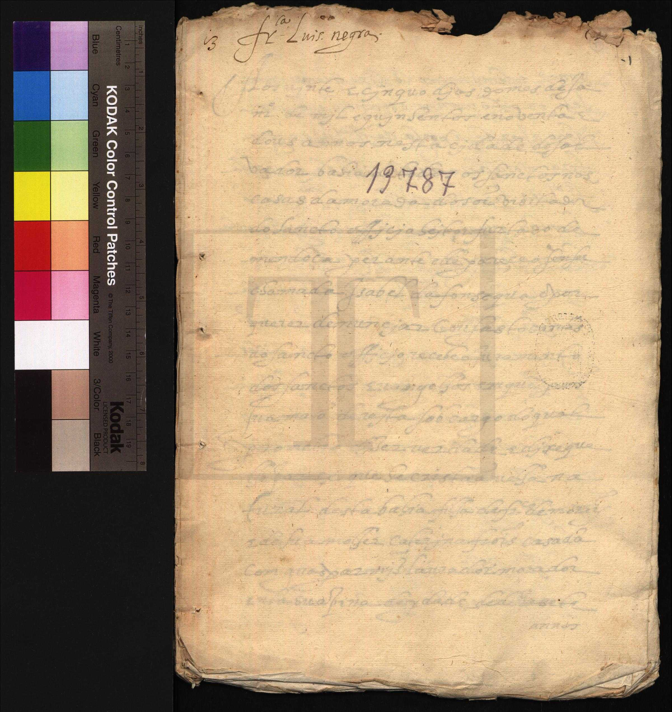 |
|
|
|
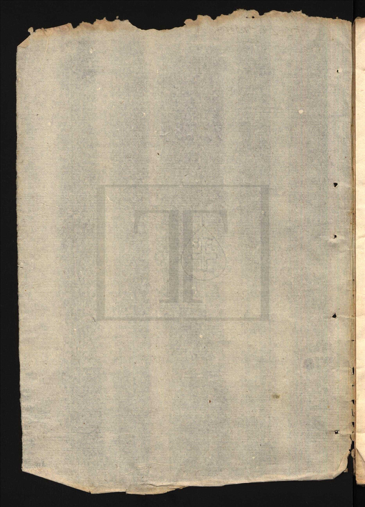 |
|
|
|
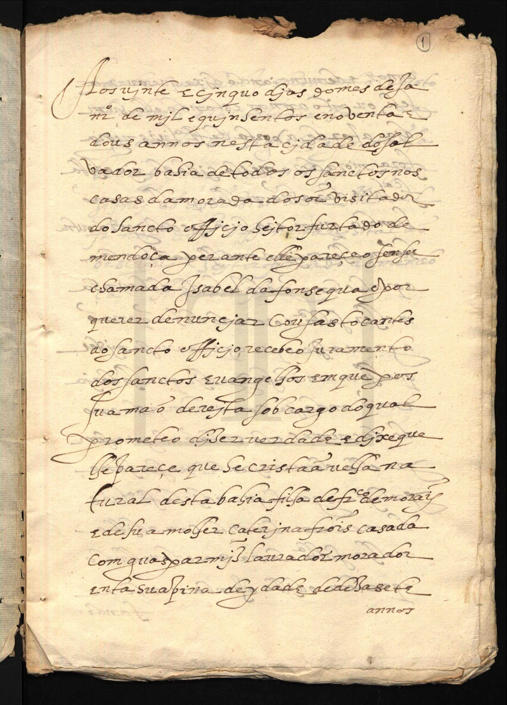 |
1
Aos vinte e cinco dias do mês de Janeiro
de mil e quinhentos e noventa e
dois anos nesta cidade do Salvador
Bahia de todos os Santos nas
casas da morada do senhor visitador
do Santo Ofício Heitor Furtado de
Mendoça perante ele apareceu sem ser
chamada Isabel da Fonseca e por
querer denunciar coisas tocantes
ao Santo Ofício, recebeu Juramento
dos Santos evangelhos em que pos
sua mão direita sob cargo do qual
prometeu dizer verdade e disse que
lhe parece que é cristã velha natural
desta Bahia filha de Francisco de Morais
e de sua mulher Catarina Fernandes casada
com Gaspar Muniz lavrador morador
en Tasuapina de idade de dezessete
annos |
|
|
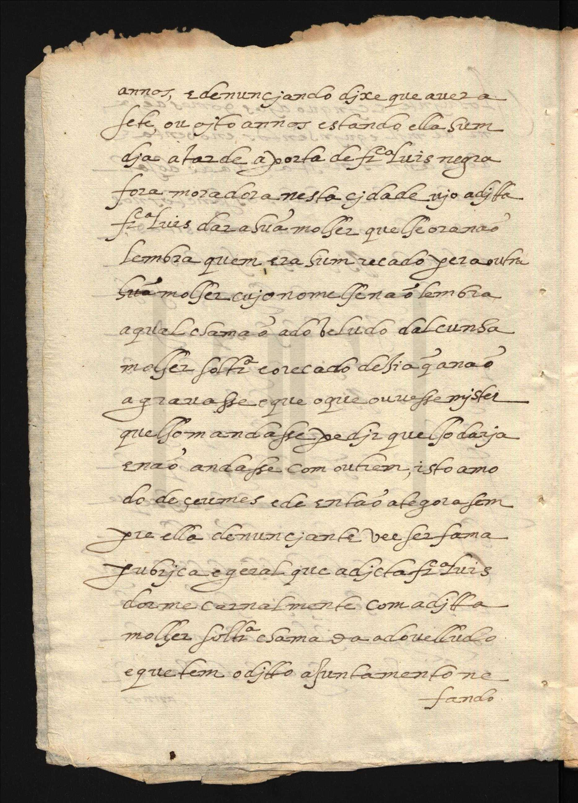 |
anos, e denunciando disse que haverá
sete, ou oito anos estando ela um
dia a tarde a porta de Francisca Luís negra
forra moradora nesta cidade viu a dita
Francisca Luís dar a uma mulher que lhe ora não
lembra quem era um recado para outra
uma mulher cujo nome lhe não lembra
a qual chamam a do veludo d'alcunha
mulher solteira e o recado dizia que a não
agravasse e que o que houvesse mister
que lho mandasse pedir que lho daria
e não andasse com outrem, isto a modo
de ciúmes e de então até agora sempre
ela denunciante vê ser fama
pública e geral que a dita Francisca Luís
dorme carnalmente com a dita
mulher solteira chamada a do veludo
e que tem o dito ajuntamento ne
fando |
|
|
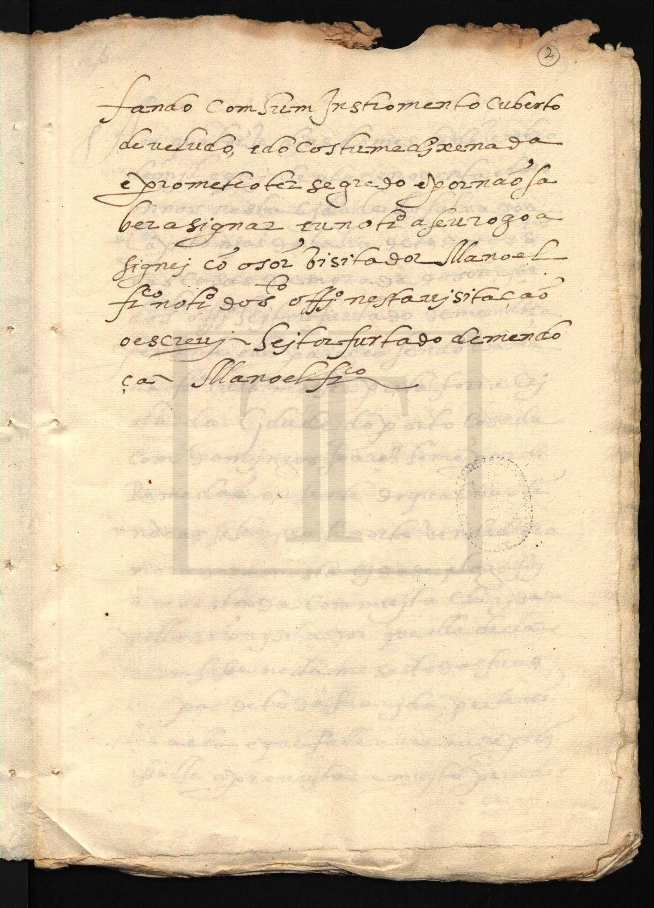 |
2 fando com um instrumento coberto
de veludo, e do costume disse nada
e prometeu ter segredo e por não saber
asssinar eu notário a seu rogo assinei
com o senhor visitador Manoel
Francisco notário do Santo Ofício nesta visitação
o escrevi * Heitor Furtado de Mendoça (*) Manoel Francisco |
|
|
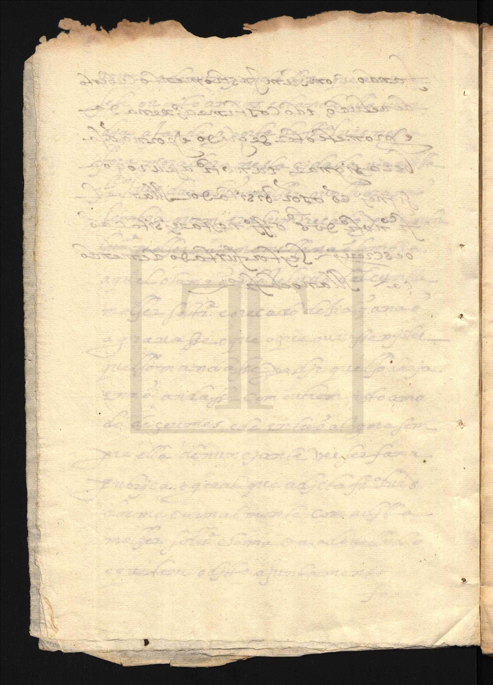 |
|
|
 |
Primeira sessão
Francisca Luís 3
Aos quatorze dias do mês de dezembro
de mil e quinhentos e noventa e dois
anos nesta cidade do Salvador
Capitania da Bahia de todos os Santos
nas casas da morada do Senhor visitador
do Santo Ofício Heitor Furtado de Mendoça
perante ele apareceu sendo chamada
Francisca Luís mulher preta forra crioula
da cidade do Porto casada
com Domingos Soarez homem pardo
Remendão ausente do qual não tem
novas se é vivo se morto vendedeira
moradora nesta cidade, e logo foi
amoestada com muita caridade
pelo Senhor visitador que ela declare
e confesse nesta mesa todas suas
culpas de toda sua vida pertencentes
a ela e que fale a verdade porque
isso lhe aproveitará muito para descargo
cargo |
|
|
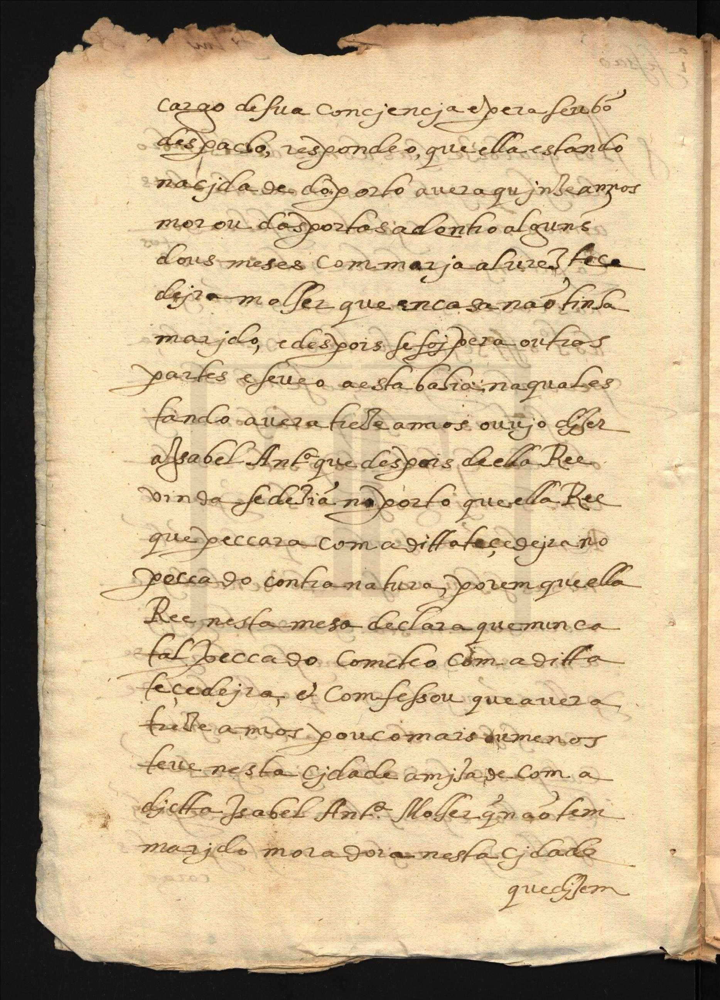 |
de sua consciência e para seu bom
despacho, respondeu, que ela estando
na cidade do Porto haverá quinze anos
morou das portas adentro alguns
dois meses com Maria Álvarez tecedeira mulher
que em casa não tinha
marido, e depois se foi para outras
partes e se veio a esta Bahia na qual estando
haverá treze anos ouviu dizer
a Isabel Antônia que depois de ela Ré
vinda se diziam n(o) Porto que ela Ré
que pecara com a dita tecedeira no
pecado contra natura, porém que ela
Ré nesta mesa declara que nunca
tal pecado cometeu com a dita
tecedeira, e confessou que haverá
treze anos pouco mais ou menos
teve nesta cidade amizade com a
dita Isabel Antônia mulher que não tem
marido moradora nesta cidade
que djzem |
|
|
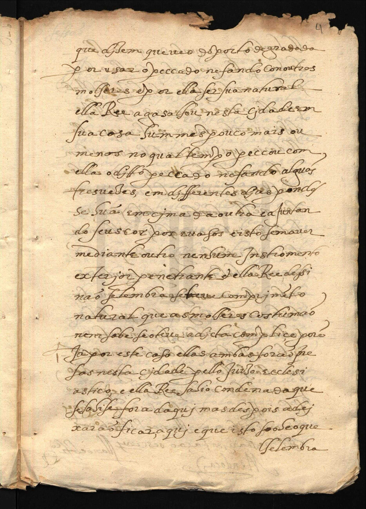 |
4
que dizem que veio do Porto degredada
por usar o pecado nefando com outras
mulheres e por ela ser sua natural
ela Ré agasalhou nesta cidade em
sua casa um mês pouco mais ou
menos no qual tempo pecou com
ela o dito pecado nefando algumas
três vezes, em diferentes dias pondo [s]
se uma em cima da outra e ajuntando
seus corpos e vasos e isto sem haver
mediante outro nenhum instrumento
exterior penetrante e ela Ré de si
não se lembra se teve comprimento
natural que as mulheres costumam
nem sabe se o teve a dita cúmplice porém
já por este caso elas ambas foram presas
nesta cidade pelo juízo eclesiástico
, e ela Ré saiu condenada que
se saísse fora daqui mas depois a deixaram
ficar aqui e que isto só é o que
lhe lembra |
|
|
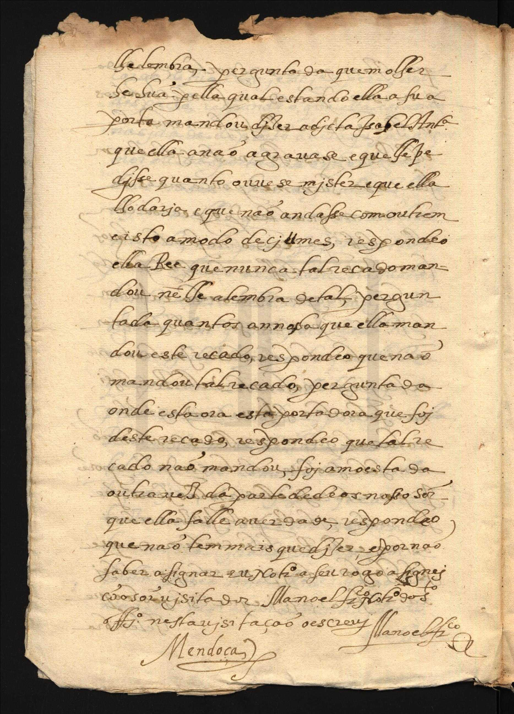 |
lhe lembra, perguntada que mulher
é uma pela qual estando ela a sua
porta mandou dizer a dita Isabel Antônia
que ela a não agravasse e que lhe pedisse
quanto houvese mister e que ela
lho daria e que não andasse com outrem
e isto a modo de ciúmes, respondeu
ela Ré que nunca tal recado mandou
nem lhe alembra de tal, perguntada quantos
anos há que ela mandou
este recado, respondeu que não
mandou tal recado, perguntada
onde está ora esta portadora que foi
deste recado, respondeu que tal recado
não mandou, foi amoestada
outra vez da parte de Deus nosso senhor
que ela fale a verdade, respondeu,
que não tem mais que dizer, e por não
saber assinar eu Notário a seu rogo assinei
com o senhor visitador Manoel Francisco Notário do Santo
Ofício nesta visitação o escrevi Manoel Francisco Mendoça Heitor |
|
|
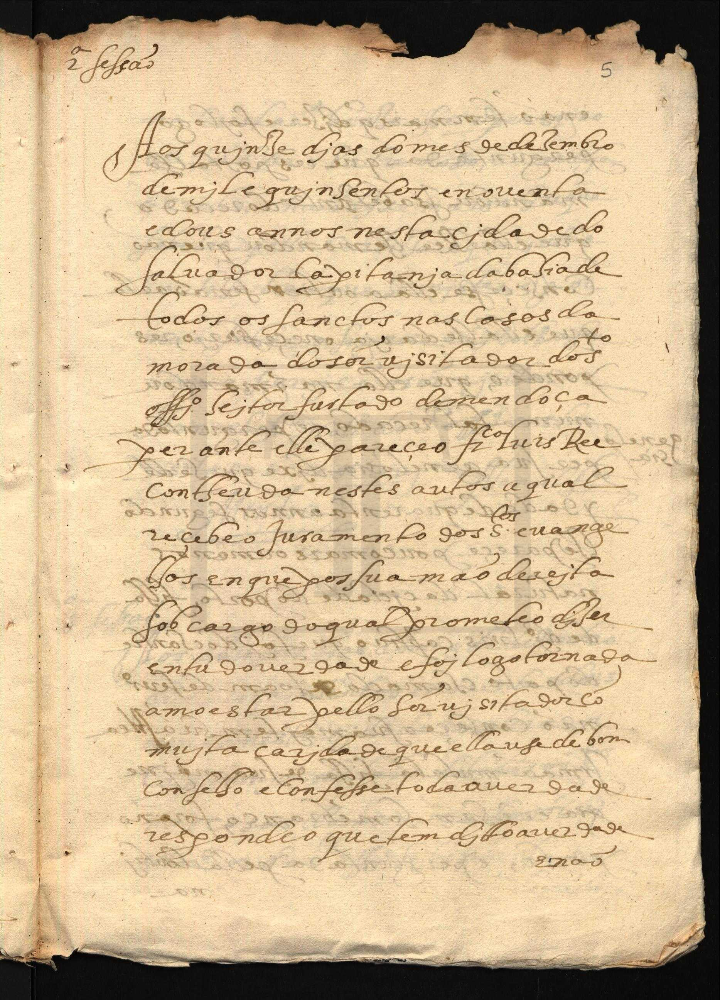 |
Segunda sessão 5 Aos quinze dias do mês de dezembro
de mil e quinhentos e noventa
e dois anos nesta cidade do
Salvador Capitania da Bahia de
todos os Santos nas Casas da
morada do Senhor visitador do Santo
Ofício Heitor Furtado de Mendoça
perante ele apareceu Francisca Luís Ré
conteúda nestes autos a qual
recebeu juramento dos Santos evangelhos
em que pôs sua mão direita
sob cargo do qual prometeu dizer
em tudo verdade e foi logo tornada
amoestar pelo senhor visitador com
muita caridade que ela use de bom
conselho e confesse toda a verdade
respondeu que tem dito a verdade
e naõ |
|
|
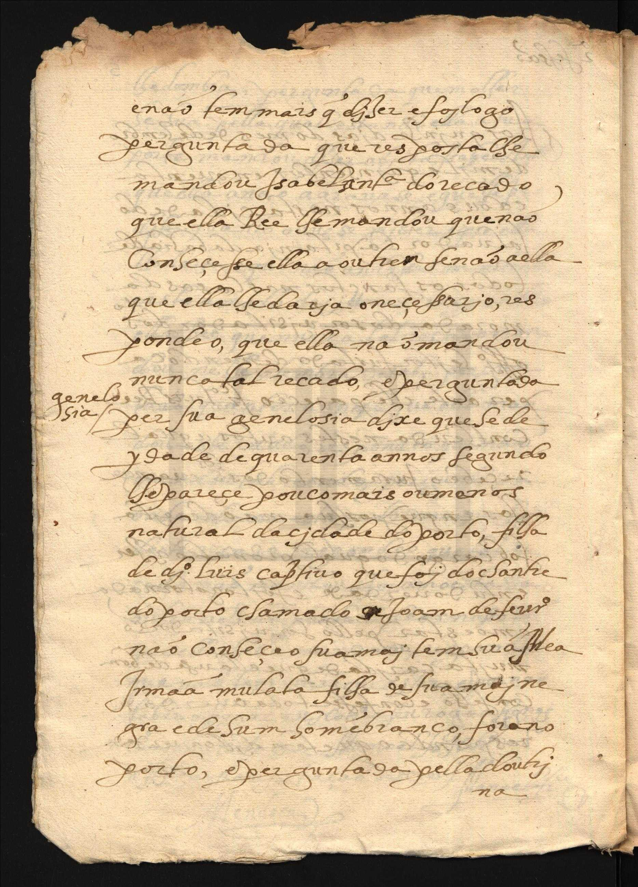 |
e não tem mais que dizer e foi logo
perguntada que resposta lhe
mandou Isabel Antônia do recado,
que ela Ré lhe mandou que não
conhecesse ela a outrem senão a ela
que ela lhe daria o necessário, respondeu
, que ela não mandou
nunca tal recado, e perguntada
genealo
per sua genelosia disse que é de
gia
idade de quarenta anos segundo
lhe parece pouco mais ou menos
natural da cidade do Porto, filha
de Diogo Luiz cativo que foi do chantre
do Porto chamado (se) João de Ferrero
não conheceu sua mãe tem uma meia
irmã mulata filha de sua mãe negra
e de um homem branco, forra no
Porto, e perguntada pela doutrina
na |
|
|
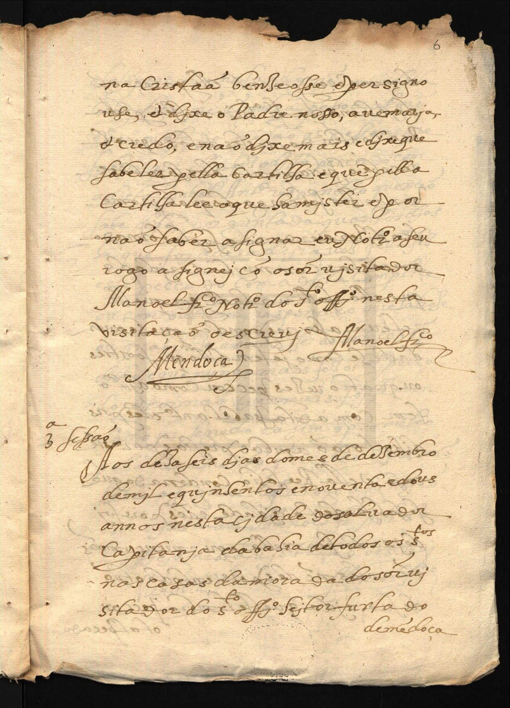 |
cristã benzeu-se e persignou-se
, e disse o Padre Nosso, Ave Maria,
e Credo, e não disse mais e disse que
sabe ler pela cartilha e que pela
cartilha lê o que há mister e por
não saber assinar eu Notário a seu
rogo assinei com o senhor visitador
Manoel Francisco Notário do Santo Ofício nesta
visitação o escrevi Manoel Francisco Mendoça Heitor Terceira sessão
Aos dezesseis dias do mês de dezembro
de mil e quinhentos e noventa e dois
anos nesta cidade do Salvador
capitania da Bahia de Todos os Santos
nas casas da morada do Senhor visitador
do Santo Ofício Heitor Furtado
de mẽdoça |
|
|
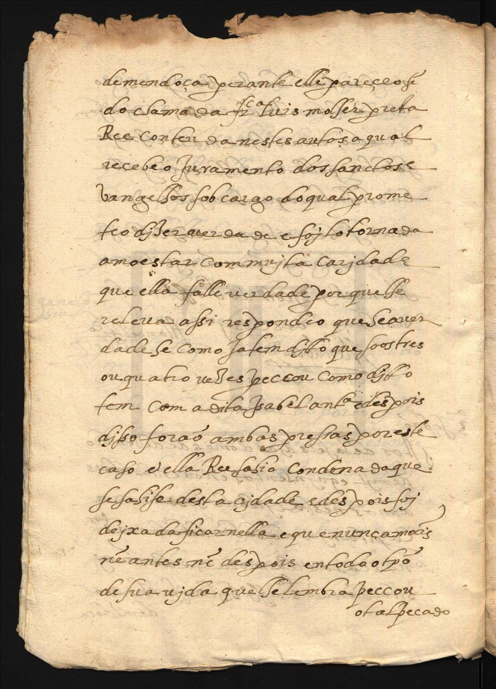 |
de Mendoça perante ele apareceu sendo
chamada Francisca Luís mulher preta
Ré conteúda nestes autos a qual
recebeu juramento dos santos evangelhos
sob cargo do qual prometeu
dizer verdade e foi logo tornada
amoestar com muita caridade
que ela fale verdade por que lhe
releva assim respondeu que é a verdade
é como já tem dito que sós três
ou quatro vezes pecou como dito
tem com a dita Isabel Antônia e depois
disso foram ambas presas por este
caso e ela Ré saiu condenada que
se saísse desta cidade e depois foi
deixada ficar nela e que nunca mais
nem antes nem depois em todo o tempo
de sua vida que lhe lembra pecou
o tal pecado |
|
|
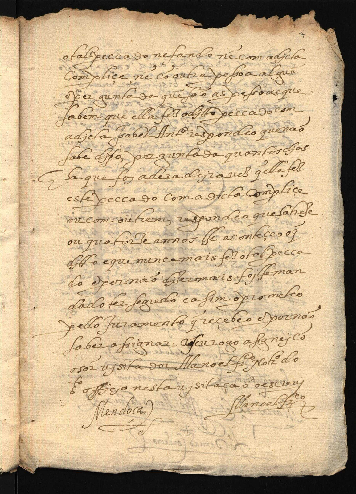 |
7
o tal pecado nefando nem com a dita
cúmplice nem com outra pessoa alguma
e perguntada quem são as pessoas que
sabem que ela fez o dito pecado com
a dita Isabel Antônia respondeu que não
sabe disso, perguntada quantos dias
(*) há que foi a derradeira vez que ela fez
este pecado com a dita cúmplice
ou com outrem, respondeu que há treze
ou quatorze anos lhe aconteceu o que
dito e que nunca mais fez o tal pecado
e por não dizer mais foi lhe mandado
ter segredo e assim o prometeu
pelo juramento que recebeu e por não
saber assinar a seu rogo assinei com
o senhor visitador Manoel Francisco Notário do
Santo Ofício nesta visitação o escrevi
Mendoça Heitor Manoel Francisco |
|
|
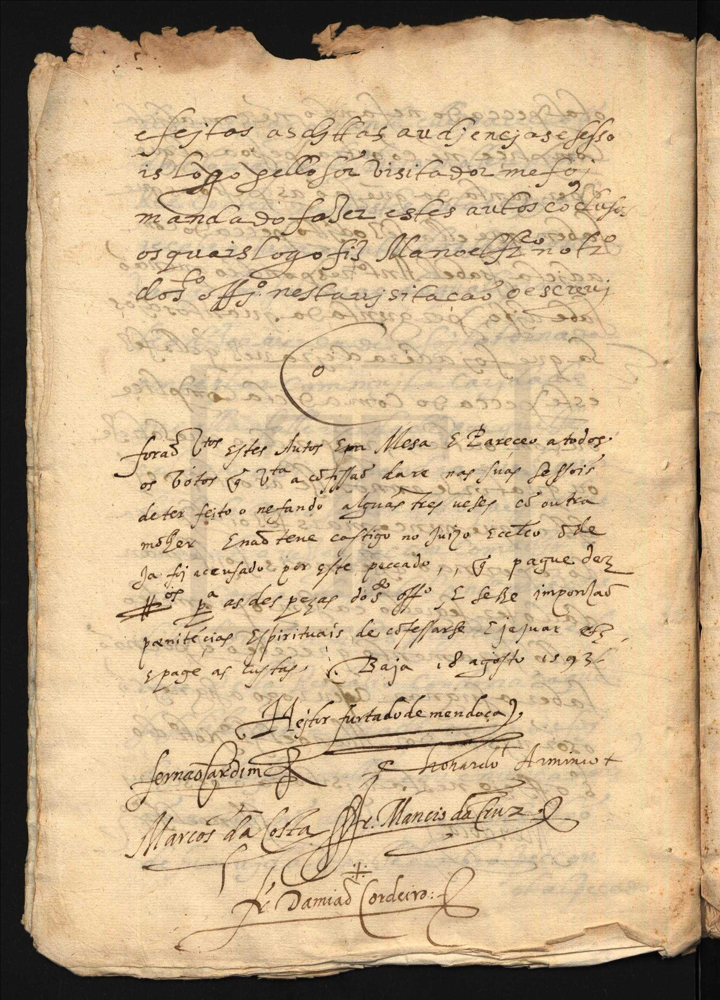 |
e feitas as ditas audiências e sessões
logo pelo senhor visitador me foi
mandado fazer estes autos conclusos
os quais logo fiz Manoel Francisco notário
do Santo Ofício nesta visitação o escrevi Conclusão foram vistos estes Autos em Mesa e pareceu a todos
os votos que vista a confissão da ré nas suas sessões
de ter feito o nefando algumas três vezes com outra
mulher e não teve castigo no juízo eclesiástico onde
já foi acusada por este pecado, que pague dez
cruzados para as despesas do Santo Ofício, e se lhe imponham
penitências espirituais de confessar-se e jejuar etcetera.
e pague as custas. Bahia, 8 agosto 1593.
Heitor Furtado de Mendoça (*) Fernão Jardim (*) Leonardo Armínio (*) Marcos da Costa (*) Frei Mancis da Cruz (*) Frei Damião Cordeiro (**) |
{kind=link}
{kind=link}
{kind=link}
{kind=link}
{kind=link}
{kind=link}
{kind=link}
{kind=link}
{kind=link}
{kind=link}
{kind=link}
{kind=link}
{kind=link}
{kind=link}
{kind=link}